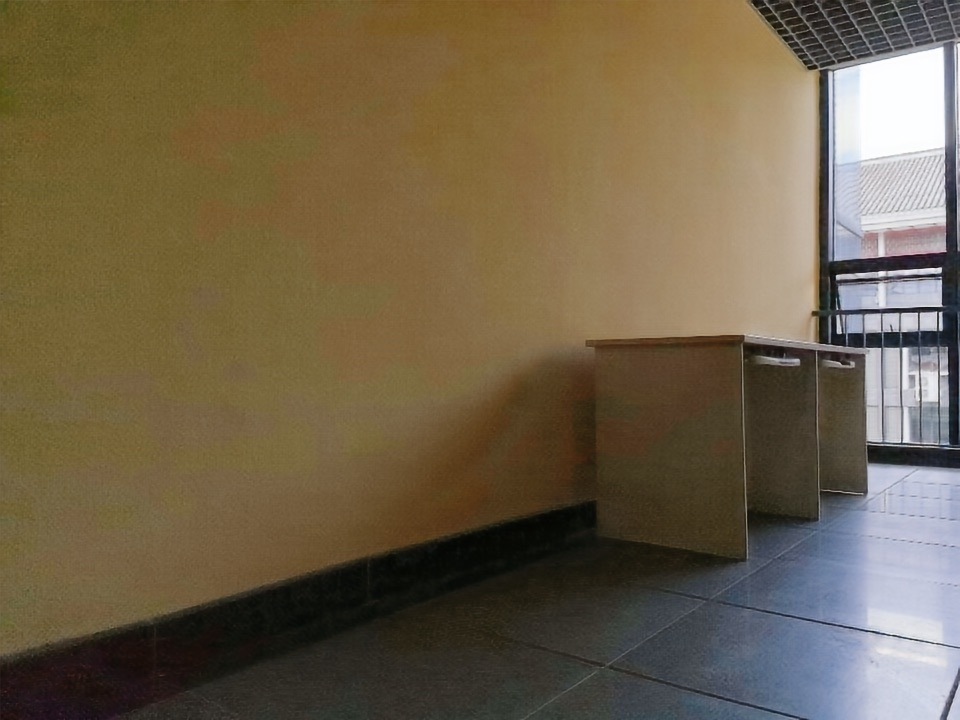
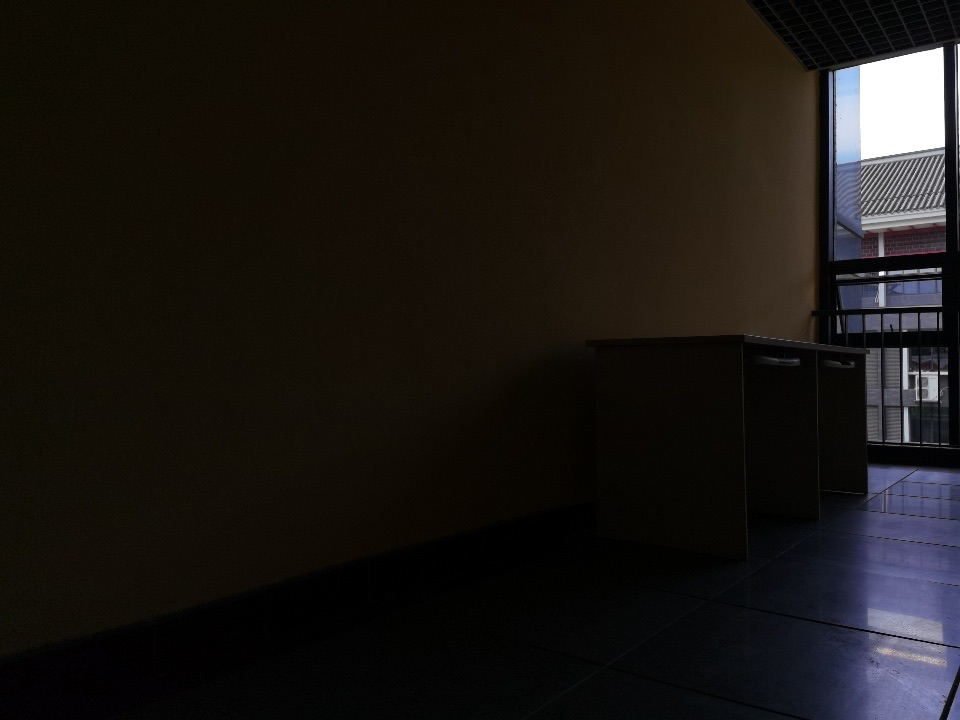

Pusan National University
B.S. in Electronics Engineering
Computer Vision Researcher & AI Engineer
I work on image exposure restoration, low-light enhancement, and self-supervised learning, with a focus on efficient vision models that can move from research prototypes to practical deployment.
Loading 3D reconstruction…
Validation using the official VGGT Kitchen example: 25 source images duplicated to 50 inputs. Final result: 500,000 points.
공식 VGGT Kitchen 예제 사진 25장을 각각 두 번 사용한 입력 50장으로 검증한 결과입니다. 최종 500,000점을 표시합니다.


Research
Research
I am a computer vision researcher and AI engineer specializing in image exposure restoration, low-light enhancement, and self-supervised learning.
I am also interested in 3D vision and simulation with NVIDIA Isaac Sim.
My doctoral research focuses on unified image exposure restoration for challenging real-world illumination conditions, including low-light, over-exposed, and backlit scenes. Instead of treating under-exposure and over-exposure as separate problems, this work reformulates them as a single exposure restoration task that aims to recover visually natural brightness, color, contrast, and structural details.
The core contribution is HDF-EC, a Hierarchical Dual-Flow architecture for efficient and consistent exposure correction. It combines a CNN-based low-level module for local texture and brightness refinement with a Transformer-based high-level module for global exposure and structural consistency.
image exposure restoration, low-light enhancement, self-supervised learning을 연구하는 computer vision 연구자이자 AI engineer입니다.
3D vision과 NVIDIA Isaac Sim을 활용한 시뮬레이션에도 관심이 있습니다.
박사학위논문은 low-light, over-exposed, backlit scene처럼 실제 환경에서 자주 발생하는 까다로운 조명 조건을 대상으로 하는 unified image exposure restoration에 초점을 둡니다. under-exposure와 over-exposure를 별개의 문제로 다루기보다, 밝기, 색상, 대비, 구조적 디테일을 자연스럽게 복원하는 하나의 exposure restoration 문제로 재정의했습니다.
핵심 기여는 효율적이고 일관된 exposure correction을 위한 HDF-EC, 즉 Hierarchical Dual-Flow architecture입니다. local texture와 brightness refinement를 담당하는 CNN 기반 low-level module과 global exposure 및 structural consistency를 담당하는 Transformer 기반 high-level module을 결합합니다.
Background
Background
B.S. in Electronics Engineering
Ph.D. in Information Convergence Engineering, AI Major
AI Development Team Lead / Senior Researcher
전자공학과 학사
정보융합공학과 AI 전공 박사
AI 개발 팀장 / 책임 연구원
Selected Work
Selected Work
D. Choo, Q. Deng, T. Park, and D. Lee, "HVR-SSLE: Hierarchical Visual Reasoning for Self-Supervised Low-Light Image Enhancement," IEEE Access, vol. 14, pp. 34705-34725, 2026.
Q. Deng, D. Choo, H. Ji, and D. Lee, "A 5K Efficient Low-Light Enhancement Model by Estimating Increment between Dark Image and Transmission Map Based on Local Maximum Color Value Prior," Electronics, vol. 13, p. 1814, 2024.
M.-j. Kim, Q. Deng, D. Choo, H. C. Ji, and D. Lee, "AGCSNet: High-contrast image-exposure correction with automatic illumination-map attention-based gamma and saturation correction," ETRI Journal, 2025.
Projects
Projects
Developed a pipeline for VGGT-based multi-view 3D reconstruction, OpenUSD export, and visualization in Isaac Sim.
Demo: the official VGGT Kitchen example, with 25 source images duplicated to 50 inputs for validation; 500,000 points shown.
VGGT 기반 다중 시점 3D 재구성, OpenUSD 내보내기 및 Isaac Sim 시각화 파이프라인 개발
데모: 공식 VGGT Kitchen 예제 사진 25장을 각각 두 번 사용한 입력 50장으로 검증 수행. 최종 500,000점 결과를 표시함
Official PyTorch implementation of the HVR-SSLE paper, which proposes a compact self-supervised low-light image enhancement model. The repository includes training and inference pipelines, dataset configuration, checkpoint handling, and analysis resources for reproducible research.
compact self-supervised low-light image enhancement 모델을 제안한 HVR-SSLE 논문의 official PyTorch implementation을 공개함. Training/inference pipeline, dataset configuration, checkpoint handling, analysis resource를 포함해 연구 재현성을 고려함
Contributed to GoCV, a Go package for computer vision using OpenCV. This reflects my interest in connecting computer vision research with practical software engineering.
OpenCV 기반 Go computer vision library인 GoCV에 기여함. Computer vision 연구를 실제 소프트웨어 구현과 연결하는 open-source contribution 수행
Skills
Skills